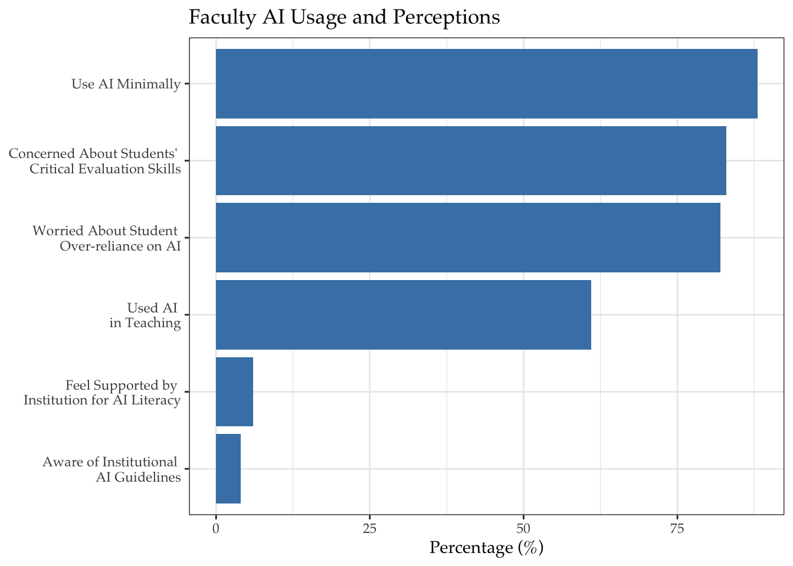
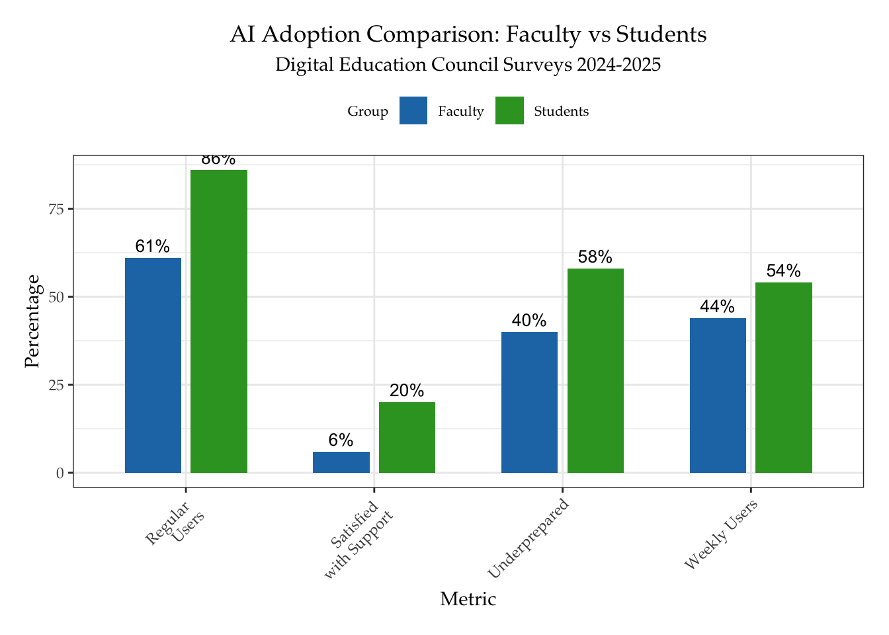
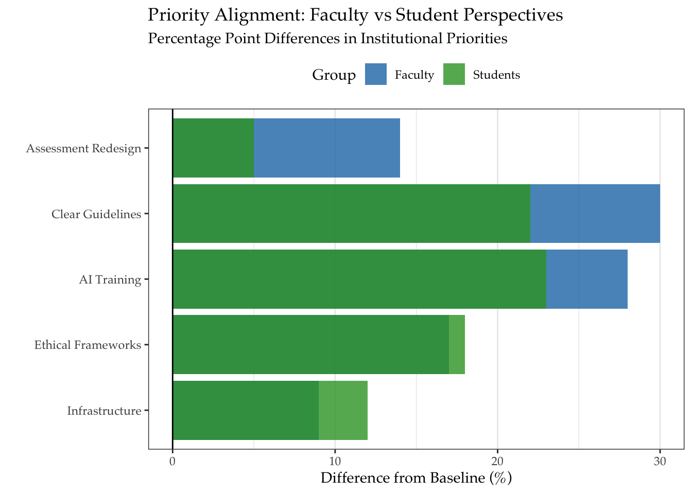

| Metric | Faculty (2025) | Students (2024) |
|---|---|---|
| Regular AI Users | 61% | 86% |
| Weekly/Daily Users | 44% | 54% |
| Concerned About Evaluation | 83% | 60% |
| Satisfied with Support | 6% | 20% |
Introduction
Artificial Intelligence (AI) is rapidly becoming ubiquitous in research and education. The advent of accessible large language models (LLMs) like OpenAI’s ChatGPT has opened new possibilities for data science research and pedagogy. Social and political scientists are beginning to ask how these AI models can enhance (or disrupt) traditional research workflows and teaching designs. This introduction provides context for the workshop and previews the modules ahead.
Bridging AI Readiness Gaps: Evidence-Based Pedagogical Design
The Digital Education Council’s 2025 Global AI Faculty Survey (n=1,681) reveals critical disconnects in AI integration readiness that directly inform data science education reform. With 61% of faculty already using AI for teaching materials creation but 88% doing so minimally, programs must move beyond basic tool adoption to strategic implementation. Three key findings demand curricular attention:
- Evaluation Crisis:
Eighty-three percent (83%) of faculty express concern about students’ ability to critically assess AI outputs, while 82% fear over-reliance (see Table 2.1). This necessitates building AI literacy scaffolds into existing data science curricula through AI integration.
This motivates this workshop in particular proposing a curricular response to the survey findings.
Module 1 Integration:
Embed AI output evaluation frameworks within research methods training. For example, comparative analysis exercises where students assess ChatGPT vs. Claude outputs on the same dataset.Module 3 Enhancement:
Develop visualization assignments requiring students to detect AI-generated data anomalies through tools like GPT-powered Quarto dashboards.
- Assessment Obsolescence:
Fifty four percent (54%) of faculty demand assessment redesign, aligning with students’ 52% concern about AI devaluing education (Hoffman 2025).
This calls for:
- Module 4 Implementation:
Create AI-resistant assessments through: - Process-oriented evaluations: Scaffolded project logs tracking human-AI collaboration
- Oral defenses: Requiring students to explain AI-generated code/outputs
- Real-world datasets: Using messy, unstructured data that challenges AI tools
- Institutional Support Vacuum:
With 80% of faculty finding institutional guidelines inadequate and only 6% satisfied with AI resources, programs must build self-sufficient ecosystems:- Module 5 Expansion:
Develop faculty learning communities (FLCs) using the survey’s regional disparity findings (78% LATAM faculty vs. 57% North American faculty view AI as opportunity) to create culturally responsive AI policies.
- Module 5 Expansion:
Data-Driven Curriculum Overhaul Framework
| Survey Finding | Curricular Response | Workshop Module Alignment |
|---|---|---|
| 61% faculty use AI for materials creation | Develop AI-assisted curriculum design labs | Module 1: Case studies on AI-driven tool integration |
| 86% faculty anticipate future AI use | Create 3-year AI adoption roadmaps | Module 5: Faculty dialogue on phased implementation |
| 66% see AI as essential for workforce prep | Partner with industry to co-design capstone projects | Module 2: Ethical data collection practicums |
Transforming Data Science Pedagogy: Four Imperatives
- From Tool Training to Critical Engagement
While 75% of faculty use AI for materials creation, only 24% employ it for student feedback. Programs should:- Implement AI critique modules where students audit algorithm biases in public datasets
- Develop hygraded assignments combining AI-generated base content with human refinement
- Ethical Infrastructure Development
Addressing 61% student privacy concerns requires:- Module 2 Enhancement:
Simulated IRB exercises for AI-assisted data collection - Module 4 Integration:
GDPR/HIPAA compliance training specific to generative AI outputs
- Module 2 Enhancement:
- Cognitive Partnership Models
With 44% faculty using AI weekly vs. 54% students, design human-AI collaborative workflows:- Prompt engineering studios: Using Claude for literature reviews vs. ChatGPT for code generation
- AI pair programming: Copilot-driven code development with human error checking
- Assessment Renaissance
Leverage the 86% faculty openness to future AI use[12] through:- Authentic portfolio assessments: Showcasing iterative human-AI project development
- Dynamic rubrics: Weighting AI-appropriate vs. human-exclusive competencies
Implementation Roadmap for Program Directors
- Diagnostic Phase (Month 1-3)
- Administer DEC’s AI Literacy Inventory to baseline faculty/student capabilities
- Audit existing courses using the AI Curriculum Integration Matrix
- Prototyping Phase (Month 4-6)
- Pilot AI-enhanced modules in 20% of data science courses
- Establish faculty AI sandbox with curated tools (ChatGPT, Copilot, Claude)
- Scaling Phase (Month 7-12)
- Implement institution-wide AI ethics certification
- Launch AI teaching assistant program using survey-driven competency gaps



AI in Data Science and Education: Generative AI’s ability to produce human-like text, code, and visuals on demand represents a paradigm shift. Tasks that once took hours (e.g., writing code or summarizing literature) can now be accelerated with AI assistance (Kovács et al 2024). At the same time, using AI in academia raises questions about reliability, ethics, and skills – issues we will revisit throughout the workshop. Banning AI outright is not a sustainable solution; “banning AI use in college classrooms is a pointless and exhausting endeavor” – instead, we should learn to use it responsibly alongside students (Craig 2025). Craig also introduces the concept of an AI literacy license for faculty, which we will discuss in Module 5. In his article, he suggests a list of online courses that faculty should take to earn this license, including Generative AI for Educators (from Google) and Empower Educators to Explore the Potential of Artificial Intelligence: (from Microsoft) This workshop aims to provide a practical introduction to these topics, equipping participants with the skills and knowledge to navigate the evolving landscape of AI in academia.
Workshop Goals: By the end of this workshop, participants will be able to:
- Understand the landscape of AI tools (especially LLMs) and their roles in social science research workflows.
- Apply AI assistance in data collection (e.g., web scraping, API access) to gather research data more efficiently.
- Integrate AI into data analysis and visualization processes (e.g. vibe coding), and critically compare traditional statistical methods with machine learning approaches.
Vibe coding
What is vibe coding?
Vibe coding uses natural language prompts to instruct AI tools to generate code and build apps. This approach allows developers to instruct AI models to write modules or component codes so the human developer can focus on the overall design. Yang at Zapier 2025
- Formulate classroom policies on student use of AI that uphold academic integrity and foster learning, informed by emerging policies at institutions like Michigan, CMU, and UT.
- Develop strategies for improving their own AI literacy and redesigning curricula to prepare students for an AI-augmented future.
Structure: The workshop is organized into five modules, each a mix of lecture, demonstration, and hands-on exercise:
- AI in Research Workflows: Comparing different AI models and tools, and where they fit in a typical research pipeline.
- AI-Assisted Data Collection: Using AI and automation for web scraping and API data retrieval.
- AI for Analysis & Visualization: Enhancing data visualization with GPT and examining a case of regression vs. machine learning.
- Teaching with AI – Policies and Ethics: Crafting classroom policies for AI usage, with examples from several universities.
- AI Literacy for Faculty: Building educators’ AI skills and rethinking curriculum design.
Each module will conclude with a practical exercise. We encourage an open mind and active participation—ask questions and share experiences. Let’s explore how AI can amplify our work as researchers and educators, while also understanding its limitations.
References
- Craig, Madeline. 2025. “Earning Our AI Literacy License.” Faculty Focus (February 12). – Emphasizes the need for faculty to become AI literate rather than banning AI weblink
- Kovács, Balázs, Gaël Le Mens, Michael Hannan, and Guillem Pros. 2024. “Can ChatGPT Accelerate Social Science Research?” Yale Insights (Jan 31). – Case study where ChatGPT replicated a specialized model’s results in a fraction of the time weblink.
- Reuters. 2023. “ChatGPT sets record for fastest-growing user base.” Reuters Technology News (Feb 2). – Report on ChatGPT reaching 100 million users in 2 months, fastest-ever adoption of a consumer app weblink.